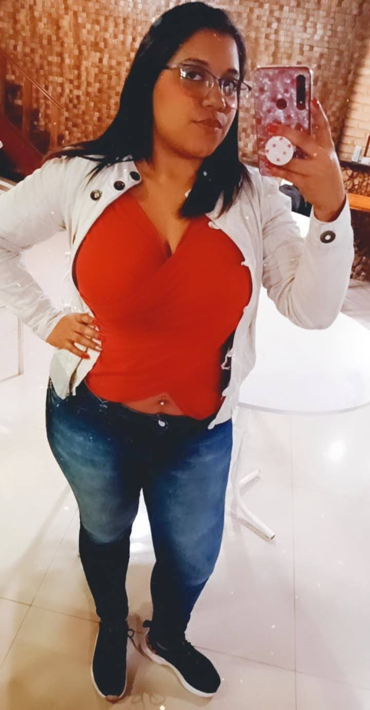
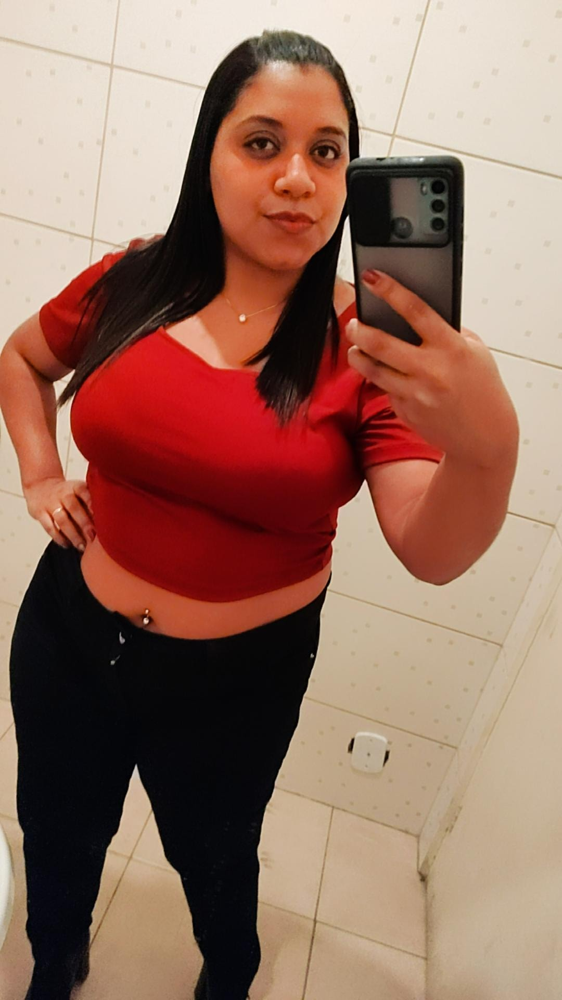
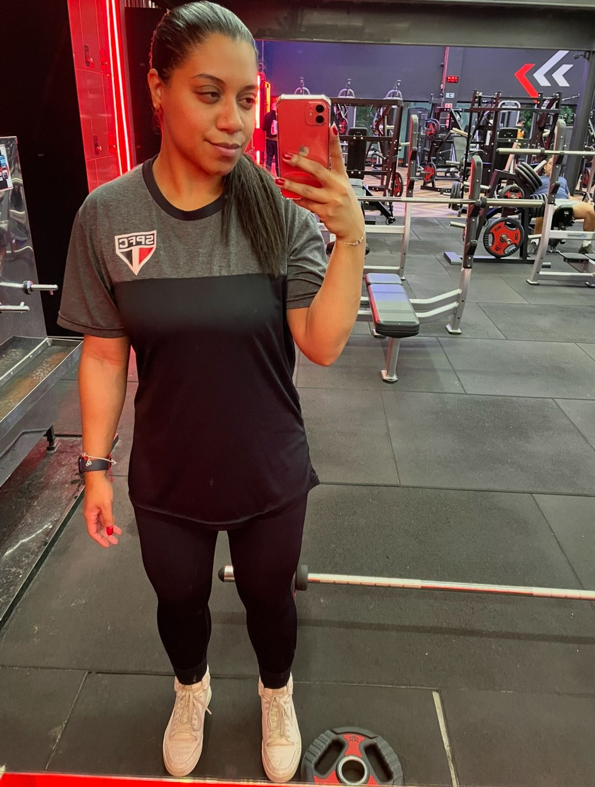

Quando nos sentimos confortáveis demais, podemos perder a motivação para crescer e melhorar, eu mesmo sou a prova viva disso na pandemia ganhei o direito de ter a vida que muitas mulheres querem, ficar em casa e ser sustentada pelo marido, eu aproveitei o máximo porem veio as consequências, ganhei peso, não estudei nada e hoje venho dizer é importante encontrar um equilíbrio entre o conforto e o desafio. Se acomodar não é apenas sobre a falta de motivação, mas também sobre a perda de oportunidade.
Eu cheguei a pesar 95kg e desistir de subir na balança, sei que ganhei muito mais peso pois as roupas me mostravam, perdi meu amor próprio pois não tinha vontade de comprar roupas e assim não tinha vontade de fazer mais nada além de comer, quando resolvi entrar na academia queria emagrecer antes pois não achava que ali era meu lugar, comecei a ir por obrigação, depois porque meu esposo ia e pra não ouvir ele reclamar que desisto fácil, mas depois de um tempo virou rotina, mas ainda não gostava se eu pudesse não ia dava Gloria de Deus, tinha meus resultados mas me sabotava pois comemorava a perca de peso comendo e com isso me acomodava ainda mais pois na cabeça era algo que não valia a pena, quando nos acomodamos, podemos perder a chance de aprender coisas novas, de conhecer pessoas novas e de experimentar coisas diferentes.
Minha chave virou no final de 2023, já estava tendo uma evolução mas para chegar na minha meta ainda tinha muito o que perder, quando vi a dieta que meu esposo fez para emagrecer vi que eu também teria que fazer e deixar muitas coisas de lado para conseguir, mas foi em 2024 depois de todas as comemorações que realmente comecei.
23kg mais leve, 23kg mais feliz!
Eu nunca pensei que seria capaz de perder tanto peso, mas com determinação e disciplina, eu consegui! Eliminar 23kg foi um desafio, mas o resultado valeu a pena. Agora, eu me sinto mais confiante, mais energizado e mais saudável. Meu corpo agradece, minha mente agradece e meu coração agradece.
A jornada não foi fácil, mas foi incrível. Eu aprendi a comer melhor, a me exercitar regularmente e a cuidar de mim mesmo. E o melhor de tudo é que eu não estou mais preso às roupas largas e desconfortáveis. Se você está pensando em perder peso, eu digo: vá em frente! É um desafio, mas é possível. Acredite em si mesmo e não desista. Você é capaz de fazer isso!
Eu estou orgulhoso de mim mesmo e espero que minha história possa inspirar você a alcançar seus objetivos. Vamos juntos nessa jornada de emagrecimento e saúde! E não se acomode! Continue buscando, continue aprendendo e continue crescendo. Você é capaz de fazer grandes coisas.